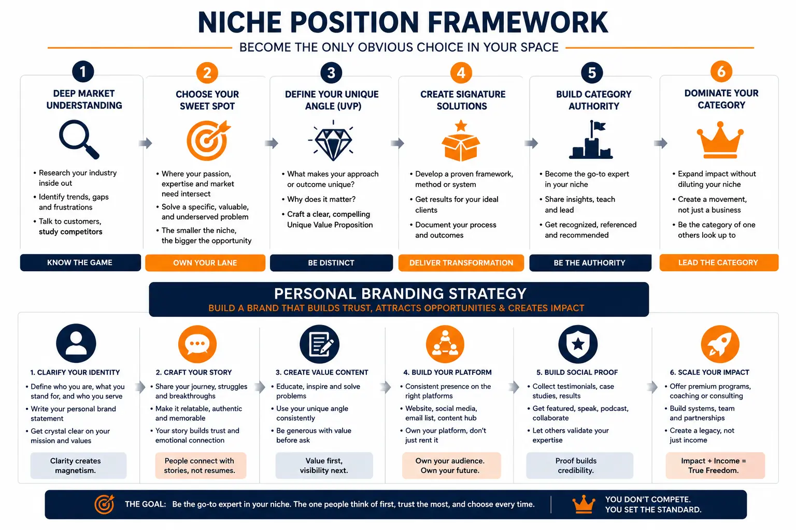
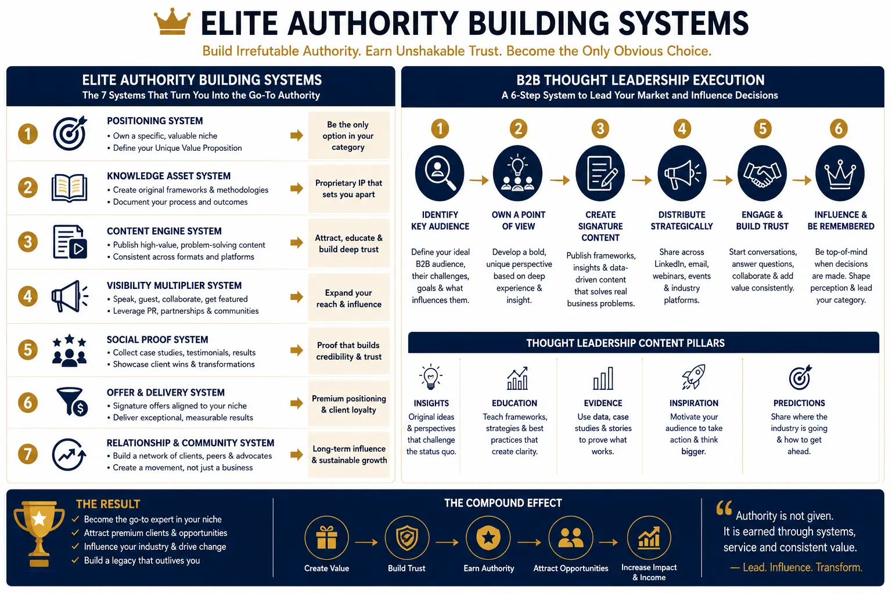

How to Move from Generic Service Provider to Category-of-One Industry Authority
The Trap of Being a Generic Service Provider
There is a common trajectory that most professionals follow when building their consulting or service-based practice. They develop genuine expertise through years of experience, build a portfolio of successful projects, and present themselves to the market as a capable provider of a broad set of services. They are competent, experienced, and professional — and they are also, from the market's perspective, completely interchangeable with dozens of other providers offering the same broad capabilities at similar price points. This is the generic service provider trap, and it is the single biggest barrier to building a premium, high-demand professional practice.
The problem is not a lack of skill. The problem is a lack of positioning. When a potential client searches for a consultant, strategist, or service provider, they encounter an overwhelming number of professionals who describe themselves in nearly identical terms — "experienced consultant," "strategic advisor," "results-driven professional." Without a deliberate Personal Branding Strategy that creates clear differentiation, even the most skilled professional becomes one option among many, competing primarily on price and availability rather than on perceived unique value. The path out of this trap requires a fundamental shift — from positioning yourself as a generalist who can serve anyone, to positioning yourself as a category-of-one authority who is the only recognised expert in a precisely defined domain.
Understanding Category-of-One Positioning: Beyond Market Leadership
Category-of-one positioning is fundamentally different from trying to become a market leader. Market leadership means winning within an existing competitive category — outperforming other providers on reputation, case studies, pricing, and marketing spend. Category-of-one positioning means defining a new category — a specific intersection of expertise, methodology, audience focus, and delivery approach — in which you are the only recognised authority. You are not competing for the top position in an existing rankings list; you are creating a new list that has only one name on it — yours.
This is the foundational principle of any effective Niche Position Framework: the goal is not to be the best option in a crowded category, but to define and occupy a category so specific that no direct comparison exists. A management consultant competes with other management consultants. An authority in operational resilience architecture for mid-market manufacturing companies in emerging economies has no direct competitor — because they have defined and claimed a positioning intersection that no one else has articulated.
Creating a unique personal brand at this level requires moving beyond surface-level differentiation — a different logo, a different tagline, a different colour palette — and into structural differentiation that is embedded in the substance of your expertise, your methodology, and the specific audience you serve. The brand is not cosmetic; it is architectural. It is built into how you think, what you deliver, and who you serve.
Building Your Niche Position Framework: The Four-Step Methodology
A Niche Position Framework is not a branding exercise — it is a strategic methodology for identifying, validating, and occupying a professional positioning that creates genuine market differentiation. Building your framework requires four systematic steps that transform broad expertise into a precisely defined, commercially valuable authority position.
- Step One — Expertise Audit. Document every skill, methodology, industry knowledge set, and professional experience that constitutes your genuine capability. This is not a résumé exercise — it is a deep inventory of what you actually know, what you have actually delivered, and what unique combinations of knowledge you possess that most competitors do not. The expertise audit is the raw material from which your category-of-one positioning will be constructed.
- Step Two — Intersection Mapping. Identify the specific combinations of expertise, industry focus, audience type, and methodology that create unique positioning opportunities. Category-of-one positioning is almost always found at the intersection of two or three specialisations — not within a single discipline. A tax accountant is generic. A tax strategist for VC-funded SaaS companies preparing for Series B fundraising is a category of one.
- Step Three — Market Validation. Test whether the identified niche positions have sufficient market demand to sustain a premium practice. Use search volume analysis, competitor landscape assessment, and direct audience research to confirm that your target audience exists, has purchasing power, and is currently underserved by existing providers. Effective market differentiation for solo founders requires a niche that is narrow enough to be defensible but large enough to be commercially viable.
- Step Four — Positioning Articulation. Craft the specific language, visual identity, and content strategy that communicates your chosen position with clarity and authority. This includes your positioning statement, your professional biography, your website messaging, your LinkedIn headline, and every piece of content you publish. The articulation step is where commercial identity asset creation begins — translating your strategic position into tangible brand assets that communicate your authority at every touchpoint.
Strategic Expertise Audit
A thorough Personal Branding Strategy begins with documenting the full depth of your professional capabilities — identifying the unique knowledge combinations that distinguish you from every other provider in your broader industry.
Intersection Mapping
The Niche Position Framework identifies precise intersections of expertise, industry, and audience that create category-of-one positioning opportunities — specific enough to eliminate direct competition and broad enough to sustain commercial demand.
Market Validation Engine
Effective market differentiation for solo founders requires validated demand — confirming through search analysis, competitor mapping, and audience research that your chosen niche has sufficient purchasing power to support premium pricing.
Commercial Identity Assets
Commercial identity asset creation transforms your strategic positioning into tangible brand assets — professional photography, branded content systems, proprietary framework visualisations, and premium content templates.

Deploying Elite Authority Building Systems: From Positioning to Perceived Authority
Defining your category-of-one position is the strategic foundation. Building recognised authority within that position is the operational challenge — and it requires Elite Authority Building Systems that systematically construct your perceived authority through coordinated, multi-channel professional presence. Authority is not declared — it is perceived. And perception is built through consistent, high-quality visibility across the platforms where your target clients seek expertise.
Elite Authority Building Systems operate across four interconnected channels, each reinforcing the others to create a compounding authority effect that accelerates over time:
- Content Publishing Engine. A structured content system that produces regular thought leadership content across LinkedIn, your professional website, and relevant industry publications. This is the primary vehicle for B2B thought leadership execution — publishing insights, frameworks, case analyses, and perspective pieces that demonstrate deep domain expertise and attract the specific audience you have defined in your niche position.
- Media Positioning Strategy. A systematic approach to securing interviews, podcast appearances, guest articles, and expert commentary placements in publications and platforms that your target audience trusts. Media positioning creates third-party validation — the perception that your authority is recognised not just by you, but by the broader industry ecosystem.
- Speaking Engagement Pipeline. A managed pipeline of speaking opportunities — conference keynotes, panel discussions, workshop facilitations, and webinar presentations — that builds your stage presence and positions you as the go-to expert for live audience engagement. Speaking engagements are particularly powerful for high-value consulting setup because they create direct, high-trust interactions with potential clients and referral sources.
- Visual Identity System. A comprehensive visual identity system — professional headshots, branded content templates, video production assets, and presentation design — that ensures every touchpoint communicates premium positioning. The visual layer is where commercial identity asset creation becomes tangible — transforming your strategic positioning into visual assets that clients encounter before they ever speak to you.
B2B Thought Leadership Execution: The Content Strategy for Category-of-One Authority
B2B thought leadership execution is the operational discipline that transforms your category-of-one positioning into a continuous stream of content that demonstrates, rather than declares, your authority. The critical distinction is between content that tells the audience you are an expert and content that shows them — through the depth, specificity, and originality of your insights — that you possess knowledge they cannot find elsewhere.
Effective thought leadership content for category-of-one positioning follows specific structural principles. Every piece should address a specific problem that your defined audience faces — not general industry trends, but the precise operational, strategic, or commercial challenges that make your niche relevant. Every piece should introduce your proprietary perspective or methodology — the named frameworks, diagnostic tools, and strategic models that are unique to your practice. And every piece should demonstrate evidence-based expertise — citing specific outcomes, referencing real scenarios, and providing actionable guidance that the audience can evaluate for quality.
This approach to content creation is also the foundation of packaging expert skills for commercial leverage. When you consistently publish content that showcases named methodologies, structured frameworks, and proprietary thinking, you are simultaneously building authority and creating the intellectual property assets that form the basis of your premium service offerings.
Content Authority Architecture
- Publish weekly thought leadership on LinkedIn using your proprietary frameworks and named methodologies to demonstrate domain expertise.
- Create long-form case analyses on your professional website that showcase specific outcomes and detailed methodology explanations.
- Contribute guest articles to industry publications that position you as the definitive voice in your category-of-one domain.
- Build a content calendar aligned with your Personal Branding Strategy that ensures consistent publishing cadence and topical coherence.
Packaging Expert Skills
- Create named proprietary methodologies and frameworks that distinguish your approach from generic consulting — this is the core of packaging expert skills for premium positioning.
- Develop tiered service offerings — diagnostic, implementation, and advisory — that communicate clear value at each engagement level.
- Build an evidence portfolio of case studies, results documentation, and client outcome metrics that provides proof of capability.
- Design professional content assets — white papers, frameworks, and diagnostic tools — that demonstrate premium production quality.
High-Value Consulting Setup
- Structure your high-value consulting setup with clear engagement models — project-based, retainer, and advisory — that command premium pricing through perceived systemic value.
- Position your services as a branded system rather than hourly expertise — clients pay for proven methodologies, not generic professional time.
- Create a client qualification process that ensures you work only with clients who fit your defined niche and value your specialised expertise.
- Build referral systems within your category-of-one positioning that generate inbound enquiries from precisely the clients you have defined as ideal.

Creating a Unique Personal Brand: From Identity to Commercial Asset
Creating a unique personal brand at the category-of-one level is not a cosmetic exercise — it is the process of transforming your professional identity into a commercial asset that generates demand, commands premium pricing, and eliminates direct competition. The brand is the market's perception of your unique value — and building it requires deliberate, systematic effort across every dimension of your professional presence.
The first dimension is intellectual property. Your named frameworks, proprietary methodologies, diagnostic tools, and published thought leadership constitute the intellectual foundation of your brand. These are not marketing artefacts — they are genuine expressions of your unique expertise, formatted and presented in ways that communicate authority and distinctiveness. The process of packaging expert skills into named, structured intellectual property is what transforms generic expertise into a recognisable, premium-positioned brand.
The second dimension is visual and production quality. Every visual element of your professional presence — your headshot, your website design, your content templates, your presentation decks, your video production — must communicate the premium positioning that your category-of-one authority demands. This is where commercial identity asset creation delivers its highest impact — creating a visual system so polished and consistent that it communicates expertise before a single word is read.
The third dimension is strategic visibility. Market differentiation for solo founders requires more than a great website and strong content — it requires a deliberate visibility strategy that places your expertise in front of the specific audiences who are most likely to become premium clients. This includes targeted LinkedIn engagement, strategic media placements, curated speaking engagements, and referral partnerships with complementary professionals who serve the same audience through different service categories.
The Commercial Impact: Why Category-of-One Authority Commands Premium Pricing
The commercial logic of category-of-one positioning is straightforward: when you are the only recognised authority in a precisely defined domain, you do not compete on price — because there is no one to compare your price against. Your clients are not choosing between you and a cheaper alternative who offers the same thing; they are choosing between engaging you or not engaging anyone with your specific expertise. This pricing dynamic is the direct commercial benefit of a robust Personal Branding Strategy built on genuine differentiation rather than superficial brand aesthetics.
A well-executed high-value consulting setup built on category-of-one positioning typically delivers three measurable commercial outcomes. First, higher per-engagement fees — because clients perceive they are purchasing a unique, proven system rather than generic professional time. Second, shorter sales cycles — because the specificity of your positioning attracts clients who have already self-selected as a fit for your expertise, reducing the need for extended persuasion. Third, stronger client retention — because clients who engage a category-of-one authority develop a relationship with a unique methodology and perspective that cannot be replicated by switching to a generic provider.
Conclusion
Moving from generic service provider to category-of-one industry authority is not a branding exercise — it is a strategic transformation that requires a deliberate Niche Position Framework, Elite Authority Building Systems, and systematic B2B thought leadership execution. The professionals who make this transition successfully do not simply change their marketing — they restructure their entire professional identity around a precisely defined expertise domain that the market recognises as uniquely valuable.
By building a rigorous Personal Branding Strategy grounded in genuine expertise differentiation, creating a unique personal brand that communicates authority at every touchpoint, packaging expert skills into named proprietary methodologies, and investing in commercial identity asset creation that matches the premium positioning you claim — solo founders and consultants can escape the generic provider trap and build a practice where they are the undisputed authority in a category they have defined.
At The PhD Ads, we specialise in building category-of-one authority positioning for solo founders, consultants, and professional service providers — delivering the market differentiation for solo founders that transforms generic expertise into premium, demand-driven professional brands through comprehensive high-value consulting setup and structured authority building systems.
Key Topics
Ready to Build a Category-of-One Personal Brand That Eliminates Competition?
At The PhD Ads in Madurai, we build category-of-one authority positioning for solo founders, consultants, and professional service providers — from niche position frameworks and elite authority building systems to commercial identity asset creation and high-value consulting setup.
Email: team@e2o.in